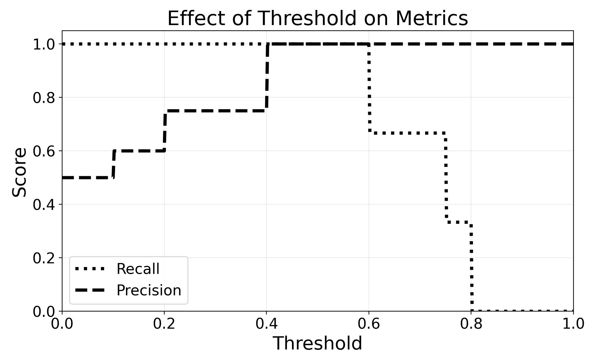

9 Evaluating Classification Models
The previous chapter described the process of splitting a dataset between training and test sets to estimate a model’s performance on unseen data. This evaluation process has the following four steps:
- Set aside a fraction of the training dataset as test set
- Train the model on the train set, do not use the test set
- Use the trained model to generate predictions on the test set
- Compute the distance between the predictions and the labels of the test
The previous chapter left this last point open: how to determine whether the predictions of a model are close to the truth? This chapter will tackle this problem for classification models. The following chapter will explore regression models.
As a reminder, classification tasks are concerned with predicting category labels such as “spam” or “malignant”.
9.1 Evaluating Distances
Imagine that we trained two models, Model A and Model B. We now want to determine which of the two is best.
To do so, we remove a test set from the training data, and generate predictions using both models. For these observations, we also have the ground truth, the true label of each.
We get the following results by generating predictions for the test set:
| Observation | Model A | Model B | Truth |
|---|---|---|---|
| 1 | \(\times\) | \(\circ\) | \(\circ\) |
| 2 | \(\times\) | \(\circ\) | \(\times\) |
| 3 | \(\times\) | \(\times\) | \(\times\) |
| 4 | \(\circ\) | \(\circ\) | \(\circ\) |
| 5 | \(\circ\) | \(\times\) | \(\times\) |
Which of the models is the most accurate?
You could start by counting the number of errors of each model:
- Model A made two errors: observation 1 and 5
- Model B made one error: observation 2
In other words, Model A was correct three times out of five whereas Model B was correct four times out of five. Model B seems more correct on average.
A sample of five observations is too low to draw conclusions about the performance of these two models. As a general rule, the more test samples the better. This allows us to get a better estimate of the performance of the model. As a rule of thumb, practitioners allocate between 5% and 20% of the training data as a test set.
There is always a trade-off between the amount of data given to the model for training, and the number of observations in the test set. Data set aside for testing reduces the size of the training data available to the model which can result in lower model performance.
The later sections of this book will cover some methods designed to address this challenge.
More than just “three out of five”, we can say that Model A was correct 60% of the time. This metric is called the accuracy of a Machine Learning model.
\[ \text{Accuracy} = \frac{\text{Number of observations correctly predicted}}{\text{Total observation count}} \]
Exercise 9.1 Calculate the accuracy of Model B.
When you hear the words “Model Accuracy” in the media, this is it.
9.1.1 Beyond Accuracy: Recall and Precision
But is accuracy sufficient? To answer this question, we need to ask another question: Are all errors the same? Do they have the same consequences on the world?
To do so, let us move beyond simple \(\times\) and \(\circ\) and into the world of tumour diagnosis. There, a benign mass misdiagnosed as a malignant tumour would generate stress and inconvenience. A malignant tumour misdiagnosed as benign could have fatal consequences.
Let us now consider the two following models, with \(\circ\) representing a benign mass and \(\times\) representing a malignant tumour:
| Observation | Model A | Model B | Truth |
|---|---|---|---|
| 1 | \(\circ\) | \(\circ\) | \(\circ\) |
| 2 | \(\circ\) | \(\circ\) | \(\circ\) |
| 3 | \(\circ\) | \(\times\) | \(\circ\) |
| 4 | \(\circ\) | \(\times\) | \(\circ\) |
| 5 | \(\circ\) | \(\times\) | \(\times\) |
| 6 | \(\times\) | \(\times\) | \(\times\) |
| 7 | \(\times\) | \(\times\) | \(\times\) |
| 8 | \(\times\) | \(\times\) | \(\times\) |
Exercise 9.2 Show that model A has a higher accuracy than model B.
Even though model A has higher accuracy than model B, it misclassified one malignant tumour as benign (Observation 5).
On the other hand, model B classified two benign masses as malignant (Observations 3 and 4) but caught all the malignant tumours.
This goes to show that Accuracy is only a part of the picture. How can we move from the description above to actual metrics?
9.1.1.1 Useful Vocabulary
Before going into error metrics, it is important to introduce some vocabulary.
In binary classification, the model learns to assign observations into two categories, such as “benign” and “malignant” in the case of tumour diagnosis, or “spam” and “non-spam” for email filtering.
Mathematically, these two labels are represented as \(1\) and \(0\). Generally, the class that the model was built to detect is assigned \(1\) and the other \(0\). In tumour diagnosis, the malignant label is generally assigned the number \(1\) as these are the cases the model was designed for. Similarly, in email filtering, the label “spam” is assigned the number \(1\), as the model aims at identifying spam messages to filter them out of the inbox.
Exercise 9.3 If you were building a fraud detection model for an online payments company, which labels would you predict for? Which one would be assigned to \(1\) and \(0\)?
In the example of tumour diagnosis, a malignant tumour correctly classified as “malignant” is called a True Positive. On the other hand, a malignant tumour misclassified as a benign mass is a False Negative.
Here, the words “positive” or “negative” are not associated with any value judgement. They are simply another way to say \(1\) or \(0\). Thinking about medical examples may make more sense here. When a medical test is positive, it means that the targeted substance is present. The same applies to spam detection. A positive spam detection means classifying an email as “spam”.
Going back to jargon, a True Positive is when the variable of interest is correctly detected (e.g., “spam” or “malignant”). A False Negative is when the variable of interest goes undetected. As an example, a malignant tumour is misdiagnosed as “benign”, or a spam email landing into the inbox.
Based on these, what would be a False Positive and a True Negative? Think about it in terms of tumours and spam emails before reading on.
- False Positive: model wrongly predicts the presence of the variable of interest, e.g., a legitimate email predicted as “spam”
- True Negative: model correctly predicts the absence of the variable of interest, e.g., a benign mass is correctly classified as a benign mass
These can be summarised in the following table:
| Predicted Positive | Predicted Negative | |
|---|---|---|
| Actual Positive | True Positive | False Negative |
| Actual Negative | False Positive | True Negative |
This is also called the Confusion Matrix.
To make this more concrete, this table could be adapted to the tumour diagnosis example:
| Predicted Malignant | Predicted Benign | |
|---|---|---|
| Actual Malignant | Malignant tumour correctly classified as “malignant” | Malignant tumour incorrectly classified as “benign” |
| Actual Benign | Benign mass incorrectly classified as “malignant” | Benign mass correctly classified as “benign” |
Or for spam filtering:
| Predicted Spam | Predicted Not Spam | |
|---|---|---|
| Actual Spam | Spam correctly classified as “spam” | Spam incorrectly classified as “not spam” |
| Actual Not Spam | Legitimate email incorrectly classified as “spam” | Legitimate email correctly classified as “not spam” |
To test your understanding, try building a Confusion Matrix for a payment fraud detection model.
| Predicted Fraudulent | Predicted Legitimate | |
|---|---|---|
| Actual Fraudulent | Fraudulent transaction correctly classified as “fraudulent” | Fraudulent transaction incorrectly classified as “legitimate” |
| Actual Legitimate | Legitimate transaction incorrectly classified as “fraudulent” | Legitimate transaction correctly classified as “legitimate” |
Now that we clearly understand the language of True/False Negative/Positive, let’s get back to measuring the performance of a Machine Learning model.
9.1.1.2 Recall
In the example of tumour diagnosis, we would like a model that would catch all malignant tumours. This is because False Negatives, i.e. misdiagnosing a malignant tumour as benign, can have fatal consequences. We want to compare the performances of Model A and B:
| Observation | Model A | Model B | Truth |
|---|---|---|---|
| 1 | \(\circ\) | \(\circ\) | \(\circ\) |
| 2 | \(\circ\) | \(\circ\) | \(\circ\) |
| 3 | \(\circ\) | \(\times\) | \(\circ\) |
| 4 | \(\circ\) | \(\times\) | \(\circ\) |
| 5 | \(\circ\) | \(\times\) | \(\times\) |
| 6 | \(\times\) | \(\times\) | \(\times\) |
| 7 | \(\times\) | \(\times\) | \(\times\) |
| 8 | \(\times\) | \(\times\) | \(\times\) |
Recall is the metric that answers the question: out of all the positive cases, how many did the model catch?
Rephrasing this for the tumour diagnosis example: out of all the malignant tumours, how many did the model catch?
This is calculated as follows:
\[ \text{Recall} = \frac{\text{Positive examples caught by Model}}{\text{All positive examples}} \]
Rephrasing this in term of True/False Positive, we get:
\[ \text{Recall} = \frac{\text{True Positives}}{\text{True Positives} + \text{False Negatives}} \]
Calculating Recall for model B:
\[ \text{Recall}_{\text{Model B}} = \frac{4}{4 + 0} = 100\% \]
Exercise 9.4 Calculate the recall of Model A, and prove that it is \(75\%\).
In the case of disease diagnosis, Recall is a critical metric as missing positive cases can have dire consequences on a patient’s life.
9.1.1.3 Precision
In other scenarios, when the cost of a False Positive is high, we care for the Precision of the model. In other words, we want to avoid False Positives.
Precision answers the question: Out of all the observations predicted as positive, how many were True Positives, i.e., actually positive?
Building a spam detection algorithm, the objective is to classify incoming emails as either “spam” or “non-spam”. Every email classified as “spam” would be filtered out of the inbox. In line with the previous section, the positive case would be “spam”, as it is the case that would require action; filtering email out of the inbox.
In spam filtering, False Positives can have serious negative consequences. Once, a recruiter’s email ended up in my spam folder. Without her reminder, I would have never worked at my current company because of a spam filtering error.
For this reason, the most important metric here is Precision: out of the messages classified as spam, how many were actually spam messages?
This can be computed as follows:
\[ \text{Precision} = \frac{\text{Number of emails correctly classified as spam}}{\text{Total number of emails classified as spam}} \]
Rephrasing this expression in Confusion Matrix jargon:
\[ \text{Precision} = \frac{\text{True Positive}}{\text{True Positive} + \text{False Positive}} \]
Looking at the example below:
| Observation | Model A | Model B | Truth |
|---|---|---|---|
| 1 | \(\circ\) | \(\circ\) | \(\circ\) |
| 2 | \(\circ\) | \(\circ\) | \(\circ\) |
| 3 | \(\circ\) | \(\times\) | \(\circ\) |
| 4 | \(\circ\) | \(\times\) | \(\circ\) |
| 5 | \(\circ\) | \(\times\) | \(\times\) |
| 6 | \(\times\) | \(\times\) | \(\times\) |
| 7 | \(\times\) | \(\times\) | \(\times\) |
| 8 | \(\times\) | \(\times\) | \(\times\) |
the precision of Model A is:
\[ \text{Precision}_\text{Model A} = \frac{3}{3 + 0} = 100\% \]
Exercise 9.5 Calculate the Precision of Model B.
9.1.1.4 Revisiting Accuracy
Accuracy, the first error metric explored in this chapter, can also be calculated with Confusion Matrix terms.
As a reminder, accuracy is calculated as follows: \[ \text{Accuracy} = \frac{\text{Number of observations correctly predicted}}{\text{Total observation count}} \]
Using the language of True/False Positive/Negative, it can be computed with the following formula: \[ \text{Accuracy} = \frac{\text{True Positive} + \text{True Negative}}{\text{Observation Count}} = {}\frac{\text{TP} + \text{TN}}{\text{TP} + \text{FP} + \text{TN} + \text{FN}} \]
This section described Accuracy, Recall, Precision and the Confusion Matrix. It is now to apply them to model selection; to choose the best performing model for a given task.
9.2 Practical Model Selection
After having built two different Machine Learning tumour diagnosis models (A and B), you get the following Confusion Matrices:
Model A
| Predicted Malignant | Predicted Benign | |
|---|---|---|
| Actual Malignant | 40 | 10 |
| Actual Benign | 10 | 40 |
Model B
| Predicted Malignant | Predicted Benign | |
|---|---|---|
| Actual Malignant | 45 | 5 |
| Actual Benign | 5 | 45 |
Which model you pick?
If you picked B, that is correct. Why did you choose it?
Exercise 9.6 If you have not done so already, compute the Accuracy, Precision and Recall of both models.
Making this decision more complex, which of the following two models would you pick?
Model A
| Predicted Malignant | Predicted Benign | |
|---|---|---|
| Actual Malignant | 48 | 2 |
| Actual Benign | 18 | 32 |
Model B
| Predicted Malignant | Predicted Benign | |
|---|---|---|
| Actual Malignant | 50 | 0 |
| Actual Benign | 20 | 30 |
If you picked B, that is correct again. Why did you choose model B? In this case, model B has the same Accuracy and the highest Recall. In the case of tumour diagnosis, this is probably the most important metric to look at.
Would you pick a different model for spam detection? Probably, as Precision becomes more important then. You do not want legitimate emails to end up in your spam folder.
Exercise 9.7 Calculate Recall and Precision for model A and B
9.3 Probabilities and Model Evaluation
For the sake of simplicity, this chapter has only considered binary predictions: either malignant or benign, either spam or non-spam.
As we have seen in the KNN chapter, classification models can also output predicted probabilities. Instead of simply predicting an observation as “malignant” or “benign”, the model can output a predicted probability of malignancy.
To convert these probabilities to a binary label, a threshold of 0.5 is generally used. Any predicted probability beyond this threshold (here 0.5) would be classified as “malignant”, otherwise, it would be classified as “benign”. For example, a predicted probability of 48% would be classified as “benign”, while a predicted probability of 51% as “malignant”.
The threshold can be any number between 0 and 1. The lower the threshold, the higher the number of Positives. In the example of tumour diagnosis, this would mean a higher number of observations predicted as “malignant”. On the other hand, a higher threshold would lead to fewer positives. In the example of spam detection, this would lead to fewer emails classified as “spam”.
Let us show this with an example:
| Observation | Predicted Probability | Threshold 0.3 | Threshold 0.5 | Threshold 0.7 | Ground Truth |
|---|---|---|---|---|---|
| 1 | 0.6 | \(\times\) | \(\times\) | \(\circ\) | \(\times\) |
| 2 | 0.75 | \(\times\) | \(\times\) | \(\times\) | \(\times\) |
| 3 | 0.2 | \(\circ\) | \(\circ\) | \(\circ\) | \(\circ\) |
| 4 | 0.8 | \(\times\) | \(\times\) | \(\times\) | \(\times\) |
| 5 | 0.4 | \(\times\) | \(\circ\) | \(\circ\) | \(\circ\) |
| 6 | 0.1 | \(\circ\) | \(\circ\) | \(\circ\) | \(\circ\) |
Which translates to the following Confusion Matrices:
Threshold 0.3
| Predicted \(\times\) | Predicted \(\circ\) | |
|---|---|---|
| Actual \(\times\) | 3 | 0 |
| Actual \(\circ\) | 1 | 2 |
Threshold 0.5
| Predicted \(\times\) | Predicted \(\circ\) | |
|---|---|---|
| Actual \(\times\) | 3 | 0 |
| Actual \(\circ\) | 0 | 3 |
Threshold 0.7
| Predicted \(\times\) | Predicted \(\circ\) | |
|---|---|---|
| Actual \(\times\) | 2 | 1 |
| Actual \(\circ\) | 0 | 3 |
The following line chart shows the evolution of the different metrics described in this chapter as the prediction threshold increases:

We see that decreasing the prediction threshold to 0.3 has the following effects on the three metrics we analysed:
- Increase in Recall: with more observations predicted as “malignant”, recall can only increase or stay constant
- Decrease in Precision: with more observations predicted as “malignant” despite a low predicted probability, the risk of misclassifying observations as “malignant” increases
Exercise 9.8 Describe the effect of increasing the threshold on Precision, Recall and Accuracy.
For tumour diagnosis, a lower threshold may make more sense. Going back to the Nearest Neighbour example, from a patient’s perspective, if the observation has two malignant neighbours and three benign ones, for a predicted probability of \(2/5 = 40\%\), I would still want further checks.
For spam filtering, a higher threshold could be preferred, to reduce the risk of a legitimate email being filtered out. You could filter out results only when they have predicted probability of 0.8 or 0.9.
This example illustrates the Precision/Recall trade-off. Setting a higher threshold will increase Precision and reduce Recall. Setting a lower threshold will reduce Precision and increase Recall.
9.4 Final Thoughts
This section has shown how to evaluate a binary classification model. There are three steps to this process:
- Set aside a share of the training data as test set
- Using the trained model, generate predictions on this test set
- Calculate the distance to the truth of the predictions generated using performance metrics such as Accuracy, Recall, and Precision
It is important to remember that there is no optimal performance metric. The best metric for a problem depends on the consequences of model error on the real world.
After this description of classification model evaluation, the next section will explore the evaluation of regression models.
9.5 Solutions
Solution 9.1. Exercise 9.1
Accuracy of Model B \(= \frac{4}{5} = 80\%\)
Solution 9.2. Exercise 9.2
Model A: Correct on observations 1, 2, 3, 4, 6, 7, 8 (7 out of 8). Incorrect on 5.
Model B: Correct on 1, 2, 5, 6, 7, 8 (6 out of 8). Incorrect on 3 and 4.
Accuracy of Model A \(= \frac{7}{8} = 87.5\%\)
Accuracy of Model B \(= \frac{6}{8} = 75\%\)
Solution 9.3. Exercise 9.3 Labels:
- fraudulent transaction \(1\)
- non fraudulent or legitimate transaction \(0\)
Solution 9.4. Exercise 9.4
Model A: Out of 4 malignant tumours (observations 5, 6, 7, 8), Model A caught 3 (6, 7, 8), True Positives. Missed 5, a False Negative.
\(\text{Recall}_{\text{Model A}} = \frac{3}{3 + 1} = 75\%\)
Solution 9.5. Exercise 9.5
\[ \text{Precision}_\text{Model B} = \frac{4}{4 + 2} = \frac{4}{6} \approx 67\% \]
Solution 9.6. Exercise 9.6
For Model A:
- TP = 40
- TN = 40
- FP = 10
- FN = 10
\(\text{Accuracy} = \frac{40 + 40}{100} = 80\%\)
\(\text{Precision} = \frac{40}{40 + 10} = \frac{40}{50} = 80\%\)
\(\text{Recall} = \frac{40}{40 + 10} = \frac{40}{50} = 80\%\)
For Model B:
- TP = 45
- TN = 45
- FP = 5
- FN = 5
\(\text{Accuracy} = \frac{45 + 45}{100} = 90\%\)
\(\text{Precision} = \frac{45}{45 + 5} = \frac{45}{50} = 90\%\)
\(\text{Recall} = \frac{45}{45 + 5} = \frac{45}{50} = 90\%\)
Solution 9.7. Exercise 9.7
For Model A:
- TP = 48
- TN = 32
- FP = 18
- FN = 2
\(\text{Precision} = \frac{48}{48 + 18} = \frac{48}{66} \approx 73\%\)
\(\text{Recall} = \frac{48}{48 + 2} = \frac{48}{50} = 96\%\)
For Model B:
- TP = 50
- TN = 30
- FP = 20
- FN = 0
\(\text{Precision} = \frac{50}{50 + 20} = \frac{50}{70} \approx 71\%\)
\(\text{Recall} = \frac{50}{50 + 0} = \frac{50}{50} = 100\%\)
Solution 9.8. Exercise 9.8
Increasing the threshold generally:
- Increases Precision: fewer observations are classified as positive, so those that are classified as positive are more likely to be true positives
- Decreases Recall: more actual positives are missed, as the model becomes more conservative